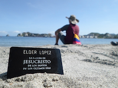

Nicolas Lopez Cespedes | WDD 130

Hello, this is Nicolas, I am from Bolivia, I was raised in many departaments as Cochabamba, La Paz and Santa Cruz, I love being in calm places where I can feel free to think in manny things or just appreciate the Lord's creations, I feel bleseed for this oportunity I'm having to learn about web development and the interest things I am learning about being careful with the details, I hope to be able to complete this course defeating my weaknesses and also enjoying while learning.